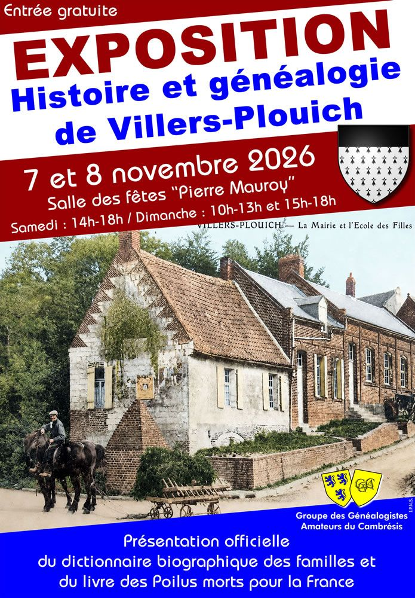

AgrandirExposition et sortie officielle des Poilus de Villers-Plouich morts pour la France et du dictionnaire des familles
La sortie officielle du livre sur les Poilus et du dictionnaire des familles de Vilers-Plouich sera accompagnée d'une exposition présentant divers aspects de la commune, les généalogies des anciens maires et des familles villersoises, ainsi que celles d'une quarantaine de personnalités ayant des racines dans le Cambrésis historique. Tous les dictionnaires seront disponibles à la vente. Exposition ouverte le samedi de 14h à 18h et le dimanche de 10h à 13h et de 15h à 18h. Entrée gratuite.